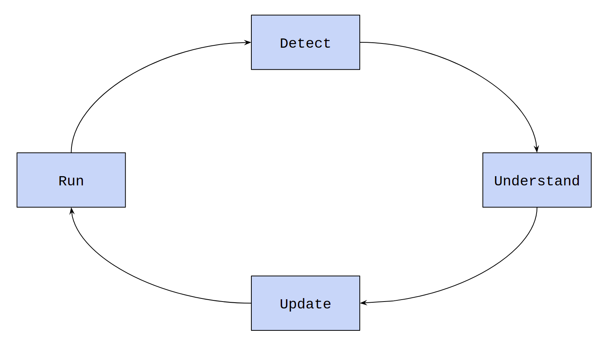

Lesson-1.4
Replit Editor
We have been using Replit’s console to type code so far. We will now move to the editor in Replit. The advantage of using the editor is that code typed here gets automatically saved. Think about it like Google Docs for code. The window to the left of the console is the editor. After typing code, click on the green Run button on the top. The output of the code will appear in the console on the right. We will completely shift to the editor from now. This means dropping the prompt symbol before each line of code.
Errors
Introduction
Enter the following line of code in the editor and run it:
This is the output that we get in the console:
File "main.py", line 1
print('123)
^
SyntaxError: EOL while scanning string literalLines 1-4 represent an error message. It is the interpreter’s way of warning us that there is something wrong with the code. Error messages usually come with some information about the errors which helps us understand what has gone wrong. In this case, we have a SyntaxError, i.e., something is wrong with the syntax. The remaining part of the message gives the details:
- EOL stands for End Of Line
- scanning a string literal
There was an issue with the end of line while scanning a string literal. The ^ sign points to the place where the error occurred. This acts as a visual aid while trying to trace the error. Going back to the code, the ending quote ' is missing. We can now fix it:
Debugging
Among software professionals, there is an alternative term used for errors in code: bugs. The process of fixing bugs is called debugging. The process usually works as follows:
- Run: run the code
- Detect: the interpreter intimates the coder of the error
- Understand: the coder has to understand the error message and go back to the code to see what went wrong
- Update: fix the error by modifying or updating one or more lines of the code
Now, the coder closes the loop by running the code again. If the code throws another error, the whole process repeats.

Debugging code forms an important part of programming. While working on huge codebases it might take several hours or even days to fix bugs.
Exceptions
We now move to a different set of errors. These are no longer syntax errors. Let us take an example:
The output is:
Traceback (most recent call last):
File "main.py", line 1, in <module>
1 / 0
ZeroDivisionError: division by zeroThe error message is quite clear here. We are trying to divide by zero and the interpreter is rightly objecting to it. This is called a ZeroDivisionError. But in terms of syntax, there is no error here. Such errors that are detected by the interpreter during the program’s execution are called exceptions. We will keep returning to the idea of exceptions in every chapter. Let us look at another exception:
The output is:
Traceback (most recent call last):
File "main.py", line 1, in <module>
1 + 'one'
TypeError: unsupported operand type(s) for +: 'int' and 'str'The interpreter throws a TypeError. The message accompanying the error is more suggestive: an integer and a string cannot be added, i.e., for the + operator, int and str cannot be the type of the two operands.
The next exception that we will frequently encounter is NameError.
The output is:
There is no problem with this line
Traceback (most recent call last):
File "main.py", line 2, in <module>
print(x ** 2)
NameError: name 'x' is not definedNotice that the first line in the code gets printed correctly. The interpreter starts executing the code from top to bottom. The first line is error free. It is the second line which has a problem. NameError occurs when we try to reference a variable that has not been defined before. We will look at what referencing a variable means in the next chapter.
Wrong Code Snippets
Wherever we wish to demonstrate examples of incorrect code, we will do it in the following manner: